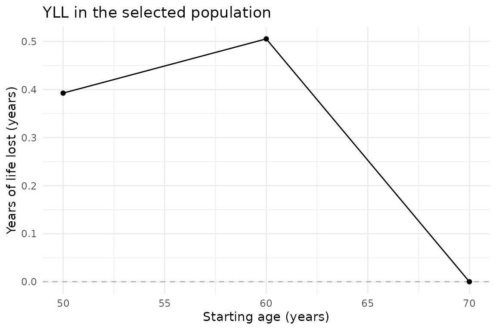
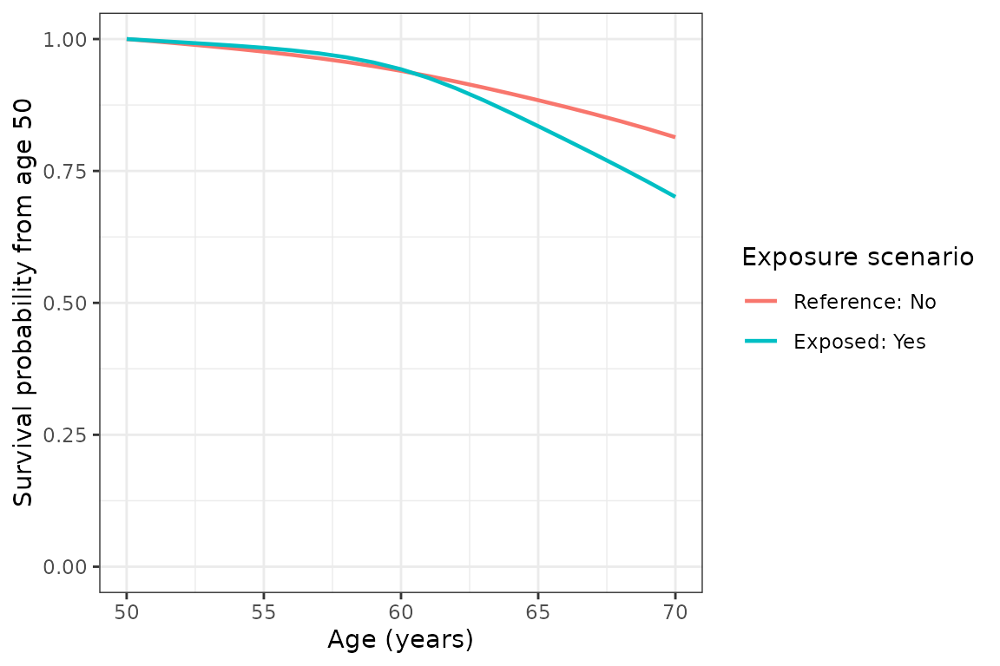

The package estimates a difference in restricted expected residual lifetime (ERL) between two exposure scenarios. State the target population and the age window first. The fitted hazard model uses the full analytic sample regardless of the target population.
Prepare person-level data
Use one row per person, a unique ID, positive follow-up duration in years, a 0/1 death indicator, age at entry, a binary exposure, and baseline covariates. Missing values in selected variables are rejected. Prepare a complete-case analysis explicitly and report how many people were excluded. Data columns must have syntactically valid R names.
The included yll_toy data contain 5,000 simulated
people. For a quick example we use 500 people, a short age window and no
bootstrap. The synthetic smoking variable combines current and former
smoking, so it should not be interpreted as the paper’s
current-versus-never smoking comparison.
data(yll_toy)
result <- estimate_yll(
data = yll_toy[1:500, ],
time_var = "period", event_var = "event",
exposure_var = "hypertension",
reference_level = "No", exposed_level = "Yes",
age_at_entry_var = "age", target_population = "unexposed",
age_start = 50, age_end = 70, age_interval = 10,
confounders_baseline = "sex", B = 0, use_future = FALSE
)
result$summary
#> # A tibble: 3 × 7
#> starting_age erl_reference erl_exposed yll yll_se ci_low ci_high
#> <dbl> <dbl> <dbl> <dbl> <dbl> <dbl> <dbl>
#> 1 50 18.7 18.3 0.393 NA NA NA
#> 2 60 9.45 8.95 0.505 NA NA NA
#> 3 70 0 0 0 NA NA NAHere the target is people observed without hypertension. The estimate
at age 50 compares expected years lived between ages 50 and 70 under the
reference and exposed scenarios, averaged over those people’s baseline
covariates. age_interval = 10 reports ages 50, 60 and 70;
the calculation uses annual hazards. All lifetimes and YLL are zero at
age 70 because the age window is empty.
Request confidence intervals
Both options use a nonparametric participant bootstrap. Each replicate refits the model, including spline knot selection, and repeats prediction and standardization. The default normal interval is the point estimate plus or minus a normal quantile times the bootstrap standard error. The percentile interval takes quantiles of the replicate estimates.
result <- estimate_yll(
yll_toy, time_var = "period", event_var = "event",
exposure_var = "hypertension", reference_level = "No", exposed_level = "Yes",
age_at_entry_var = "age", target_population = "unexposed",
age_start = 40, age_end = 90, age_interval = 5,
confounders_baseline = c("sex", "education_years", "bmi", "smoke_binary"),
B = 2000, seed = 20260917, ci_method = "percentile", use_future = FALSE
)The longer example is not executed during package checks. Failed
replicates produce a warning and are recorded with iteration numbers and
reasons in result$meta$bootstrap_failures. Intervals use
the successful replicates; many failures undermine their interpretation.
Do not treat a computed interval as evidence that the model was
stable.
Inspect and customize plots
if (requireNamespace("ggplot2", quietly = TRUE)) {
print(plot_yll(result) + ggplot2::labs(title = "YLL in the selected population"))
print(plot_survival(result, age_start = 50) + ggplot2::theme_bw())
}

With bootstrap results, the plots include pointwise intervals. Survival bands use the selected interval method and are clipped to zero and one. They are not simultaneous confidence bands across ages.
Inspect the complete result
summary contains one row per starting age.
bootstrap_estimates adds an iteration column
to replicate estimates. survival_curves contains
starting_age, age,
survival_reference, and survival_exposed;
bootstrap_survival_curves adds iteration.
meta records settings, population sizes, successful
replicate count, and failures.
Optional parallel bootstrap
future::plan(future::multisession, workers = 2)
# Use use_future = TRUE in estimate_yll().
future::plan(future::sequential)The package uses the caller’s future plan and progressr handlers. It does not start a worker pool or change global progress handlers. Random state is restored after estimation. Repeating a call with the same seed and backend is reproducible; sequential and future backends can use different random streams.